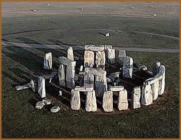
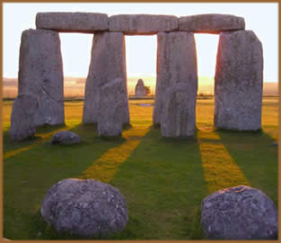
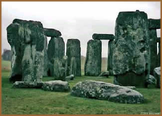
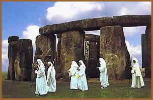

Os povos saxões o chamavam
de Hanging Stones (Pedras Suspensas), escritos
medievais chamavam de Dança dos Gigantes. Estas
são denominações diferentes para referir-se
ao mesmo monumento, hoje conhecido como Stonehenge (do inglês
arcaico Stan = pedra + hencg = eixo).
Stonehenge é um complexo monolítico,
formado por círculos concêntricos de pedras que chegam
a ter cinco metros de altura e pesar quase cinqüenta toneladas,
situado na planície de Salisbury, sul da Inglaterra, a
cerca de 130 quilômetros de Londres. Os responsáveis
por sua construção, os métodos utilizados
e sua finalidade, mantêm-se, ainda nos tempos atuais, como
um grande enigma.
Originalmente,
o monumento era um círculo externo que media 86 metros
de diâmetro. O círculo interno, com pedras maiores,
de 5 metros de altura, contava 30 metros em seu diâmetro.
Possuía 30 blocos verticais sobre os quais coloca- ram-se
30 blocos horizontais, formando um ininterrupto anel de pedra.
Ainda mais alto, são os cinco portais que formam a ferradura
externa, com cerca de nove metros de altura e perto de 15 toneladas.
Ainda, existia uma avenida de acesso principal onde situavam-se
os portais de pedra. Havia também do lado externo do círculo
maior, uma série de cavidades no solo que circundavam o
monumento. Estas cavidades estavam destinadas a um outro círculo
de pedras, que nunca seria construído.
Ao analisar as pedras utilizadas, percebe-se que
foram minuciosamente cortadas para que uma se encaixasse sobre
a outra, formando os chamados trilitos. Embora já estejam
bastante apagadas devido à ação do tempo,
diversas pedras trazem desenhos ou inscrições rupestres
feitas pelas antigas civilizações.
A construção
de Stonehenge
No século XX, arqueólogos, através
da técnica de datação do Carbono 14, estabeleceram
que a construção de Stonehenge teve início
em torno de 2950 a.C. e encerrou-se em aproximada- mente 1600
a.C.. Portanto, as primeiras pedras erguidas nesta obra sustentam-se
há mais de 5000 anos.
Se a construção de Stonehenge se
estendeu por mais de 13 séculos e técnicas diferentes
foram utilizadas para erguer o monumento, considera-se que vários
povos habitaram o local neste período. Assim, não
apenas uma, mas algumas culturas que habitaram a região
atuaram em sua construção.
Não há referências seguras
sobre quais povos participaram desse trabalho. Mas há evidências
arqueológicas de que há cerca de 10 mil anos, naquela
região, já havia presença humana. No século
XVIII, William Stukeley, astrólogo e membro da maçonaria,
argumentava que era um templo construído pelos druidas,
sacerdotes do povo celta. Mas os celtas estabilizaram-se cerca
de 1000 anos após a conclusão do monumento. Portanto,
esta possibilidade é descartada e conclui-se que Stonehenge
teria sido obra de povos anteriores aos celtas.
Recentemente, em 2003, operários que instalavam
tubulações em Boscombe, área próxima
ao sítio histórico de Stonehenge, encontraram uma
tumba coletiva com sete corpos (três crianças, um
adolescente e três homens). Ao lado dos esqueletos, havia
pontas de flecha e potes de barro datados de 2300 a.C., época
da construção de Stonehenge. Ao analisar as camadas
de esmalte dos dentes dos esqueletos, pesquisadores descobriram
traços da composição da água encontrada
na região de Wales, local de origem das pedras centrais
de Stonehenge. Essa evidência levou à conclusão
que os Arqueiros de Boscombe (como foram apelidados)
provavelmente, ajudaram a erguer as pedras do monumento.
Merlim
e os gigantes
O escritor e clérigo inglês Geoffrey
de Monmouth, em sua obra Dança dos Gigantes (1130),
narra que Uther Pendragon, pai do lendário Arthur, por
volta do século V, após uma traição
de Heingist liderando os saxões a um massacre de 460 nobres
britânicos numa conferência de paz, decidiu elevar
um monumento em memória dos guerreiros mortos. Assim, Pendragon
convocou Merlim e o mago sugeriu a busca de antiqüíssimas
pedras gigantescas que formavam um círculo mágico,
capaz de curar todas as enfermidades, construído por gigantes
na Irlanda.
Os gigantes, que eram pacíficos e infantis
e tinham longa vida, haviam criado os círculos de pedra
para saudar a natureza e para brincar, provocando assim uma certa
disputa para ver quem construía um número maior
de círculos (esta seria a origem dos inúmeros círculos
distribuídos por toda Europa até hoje). Segundo
Merlim, esta raça extinta de gigantes havia transportado
essas pedras mágicas da África para a Irlanda. A
água que fosse derramada sobre as pedras mágicas
adquiria poderes curativos. Dessa forma, os gigantes tratavam
seus ferimentos com preparados de ervas combinadas à água
mágica.
Pendragon e seu irmão Ambrosius convocaram
um exército de 15 mil homens a fim de transportar as pedras.
Mas todas as tentativas fracassaram. Foi então que Merlim,
valendo-se de poderes mágicos, transportou-as até
os barcos que as trouxeram até Salisbury, na Inglaterra.
Merlim dispôs as pedras ao redor das sepulturas, da mesma
forma que os antigos gigantes. Segundo a lenda, ainda hoje encontram-se
as inscrições dos túmulos de Uther e Aurelius.
Atkinson
e os arqueólogos
Em 1950, Richard Atkinson e outros arqueólogos
britânicos, elaboraram a teoria sobre o processo de construção
de Stonehenge, que teria sido realizado em três etapas.
Outras teses apontam para quatro etapas entre 3100 a.C e 1100
a.C.. Mas o raciocínio de Atkinson ainda é o mais
aceito no meio científico.
Assim,
na primeira etapa, no final do período neolítico,
foi construída uma planície que forma o círculo
externo, do qual se dispunham cinqüenta e seis cavidades
conhecidas como Aubrey Holes, formando um anel. A primeira
pedra, posicionada na vertical, conhecida como Heel Stone,
foi disposta do lado de fora do círculo, frente à
única entrada do monumento. Ainda, foram dispostas outras
quatro pedras conhecidas como Pedras de estação.
A segunda etapa teve início aproximadamente
duzentos anos mais tarde, já na Idade do Bronze. Neste
processo, ocorreu a construção do duplo círculo
interior, formado por oitenta blocos de pedra (conhecidos como
bluestone) trazidos das montanhas de Prescelly, sul do
País de Gales, a 320 km de Stonehenge.
Acredita-se que as pedras foram transportadas por
embarcações através da costa gaulesa e posteriormente,
em terra firme, levadas sobre cilindros até o local do
templo. Estas pedras foram posicionadas na vertical, no interior
do círculo primário. Além disso, foi construída
também a avenida que leva ao monumento de Stonehenge e
à margem externa das planícies.
Na terceira e última etapa, iniciada em
torno de 2550 e estendendo-se até 1600, os dois círculos
internos compostos pelas pedras foram desfeitos e reconstruídos.
Nesse momento também foram posicionadas as pedras transversais
que se apóiam sobre as pedras eretas. Ainda, o bloco conhecido
como Pedra do Altar foi posicionado em frente a um dos
trilitos.
Stonehenge: ciência
e espiritualidade ancestrais
Além
dos povos responsáveis pela cons- trução,
o período cronológico e as técnicas utilizadas
para erguê-lo, as incertezas sobre o monumento de Stonehenge
também estão presentes quando aborda-se sua finalidade.
A região de Wiltshire é rica em ruínas pré-históricas.
Woodehenge, Durrington Walls e mais de 350 sepulturas são
provas da atividade dos antigos habitantes locais. Ao redor do
monumento principal, existem outras obras intrigantes. Afastado
de Stonehenge, 800 metros ao norte encontra-se o chamado Cursum,
uma pista reta com 2800 metros de comprimento e 90 metros de largura,
que seria utilizada em procissões e cerimônias religiosas.
Ainda na região de Stonehenge encontra-se
os Círculos ingleses, que são desenhos
circulares surgidos misteriosamente em campos de cultivo de soja,
trigo, cevada e milho. Interessante é que os cereais cultivados
dentro dos círculos, tendem a desenvolver-se 40% mais que
outros mais afastados. Este fato leva a crer que esta região
possui algum tipo de energia natural e que os antigos tinham conhecimento
disto. Por isso optaram por construir Stonehenge, que seria um
templo religioso, naquele local, e assim intensificar e absorver
esta energia.
Mesmo havendo um vasto sítio de pedras na
região, os monólitos utilizados foram trazidos de
muitos quilômetros de distância. Isto leva a crer
que essas pedras eram essenciais para a perfeita conclusão
do trabalho e reforça o conceito de que Stonehenge tenha
uma finalidade religiosa. Pois estas pedras, trazidas de tão
longe, teriam um caráter sagrado e ritualístico
para os povos antigos.
Vestígios de corpos cremados encontrados
nas Aubrey Holes indicam que ali foram celebrados ritos funerários
e que estas cavidades podem ter simbolizado um portal para outros
mundos. O esotérico John Michell sugere que se trata de
um templo cósmico dedicado aos doze deuses zodiacais.
Em sua obra História dos Hiperbóreos,
de 350 a.C., o grego Hecateu de Abdera atribui uma finalidade
ao monumento: "ergue-se um templo notável, de
forma circular, dedicado a Apolo, Deus do Sol". O arquiteto
inglês do século XVII, Inigo Jones, fez o primeiro
estudo sério sobre Stonehenge e considerou-o um templo
romano. Se Stonehenge é obra de várias culturas,
pode-se supor que suas finalidades também sejam diversificadas.
A perfeição geométrica faz
supor que este trabalho tenha sido realizado por inteligências
superiores extraterrenas, e que funcionasse como um campo de pouso
para discos voadores ou apenas uma referência para navegação
interplanetária. Porém, obviamente, esta é
uma tese não científica que fica limitada a alguns
grupos de ufologia.
Ainda,
pode-se analisar Stonehenge sobre a ótica da arqueoastronomia,
ciência que tem por objetivo estudar os conhecimentos astronômicos
dos povos antigos. Desse modo, o astrônomo americano Gerald
Hawkins, estabeleceu diversas relações geométricas
entre o posicionamento das pedras do monumento. Stonehenge seria
um observatório pré-histórico cujo alinhamento
das pedras produz um traçado de linhas que marcam o nascer
e pôr do Sol em datas chaves como os solstícios.
Os movimentos do Sol, da Lua e das estrelas, podiam ser seguidos,
os eclipses podiam ser previstos e os deuses do Zodíaco
adorados no tempo próprio. Assim, Stonehenge não
teria apenas uma finalidade religiosa, mas também, em parte,
científica.
No século XX, Stonehenge abrigou celebrações
de neopagãos. A partir de 1918, o local passou a ser recuperado.
Algumas pedras que, devido ao tempo, estavam inclinadas e prestes
a tombarem, foram reposicionadas. Em 1985, as autoridades inglesas,
a fim de preservar o monumento e a região, proibiram os
festivais neopagãos. Atualmente, o local é administrado
pelo English Heritage e foram tomadas medidas rigorosas para garantir
sua preservação. O número de visitantes é
de cerca de 700 mil por ano.
Independentemente de sua finalidade, o monumento
de Stonehenge é mais que um ponto turístico; é
uma obra que desafia os pesquisadores modernos e excita a imaginação
de cada visitante. Certamente, o fascínio exercido pelo
monumento não está apenas em sua grandeza e imponência
desproporcionais ao pensamento contemporâneo, mas principalmente,
nos mistérios que cada pedra guarda, há mais de
5 mil anos.
Por
Spectrum